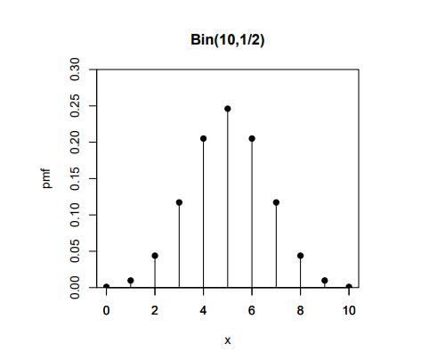

15 Distribuciones Discretas
15.1 Distribuciones para cuatro esquemas de muestreo
| Con Reemplazo | Sin Reemplazo | |
|---|---|---|
| Número finito de ensayos (n) | Binomial (Bern si n=1) | HGeom |
| Intentar hasta r éxitos | NBin (Geom si r=1) | HGeomN |
15.2 Distribución de Bernoulli
La distribución de Bernoulli es el caso más simple de la distribución Binomial, donde solo se tiene un ensayo (n=1). Digamos que X se distribuye \(Bern(p)\). Sabemos lo siguiente:
\(\textbf{Historia:}\) Un ensayo es realizado con la probabilidad \(p\) de “éxito”, y X es el indicador de ese éxito: 1 significa éxito y 0 fracaso.
\(\textbf{Ejemplo:}\) Sea X el indicado de Caras al tirar una moneda justa. Entonces \(X \sim Bern(\frac{1}{2})\). También, \(1 - X \sim Bern(\frac{1}{2})\) es el indicador de Cruz.
15.3 Distribución Binomial

Digamos que X se distribuye \(Bin(n,p)\). Sabemos lo siguiente:
\(\textbf{Historia:}\) X es el numero de “éxitos” que vamos a lograr en n ensayos independientes, donde cada ensayo es o un éxito o un fracaso., cada uno con probabilidad \(p\) de éxito. También podemos escribir X como la suma de variables aleatorias independientes Bern(p). Sea \(X \sim Bin(n,p)\) y \(X_j \sim Bern(p)\), donde todas las Bernoullis son independientes. Entonces
\(X = X_1 + X_2 + X_3 + ... + X_n\)
\(Ejemplo:\) Si Jeremy Lin hace 10 tiros libres y cada uno tiene, independientemente, una probabilidad de entrar de \(\frac{3}{4}\), entonces el número de tiros libres que logra se distribuye \(Bin(10, \frac{3}{4})\).
\(\textbf{Propiedades:}\) Sea \(X \sim Bin(n,p)\), \(Y \sim Bin(m,p)\) con \(X \perp Y\).
\(\bullet \textbf{Redefiniendo el exito:} \text{n-X} \sim Bin(n,1-p)\)
\(\bullet \textbf{Suma:}X+Y \sim Bin(n+m,p)\)
\(\bullet \textbf{Condicional:}X|(X+Y=r)\sim HGeom(n,m,r)\)
\(\bullet \textbf{Relacion Binomial-Poisson:} Bin(n,p) \text{es aproximadamente}\) \(Pois(\lambda)\) si p es pequeña.
\(\bullet \textbf{Relacion Binomial-Normal:}Bin(n,p)\) es aproximadamente \(N(np,np(1-p))\) si \(n\) es grande y \(p\) no esta cerca de 0 o 1.
15.4 Distribución Geométrica
Digamos que X se distribuye \(Geom(p)\). Sabemos lo siguiente:
\(\textbf{Historia:}\) X es el numero de “fracasos” que vamos a obtener antes de obtener nuestro primer éxito. Nuestros éxitos tienen probabilidad \(p\).
\(\textbf{Ejemplo:}\) Si cada pokebola que tiramos tiene una probabilidad \(\frac{1}{10}\) de atrapar a Mew, el número de pokebolas fallidas se distribuye \(Geom(\frac{1}{10})\).
15.5 Distribución del Primer Éxito
Es equivalente a la distribución Geométrica, excepto que incluye el primer éxito en la cuenta. Esto es una unidad mas que el número de fracasos. Si \(X \sim FS(p)\) entonces \(E(X)=1/p\).
15.6 Distribución Binomial Negativa
Digamos que X se distribuye \(NBin(r,p)\). Sabemos lo siguiente:
\(\textbf{Historia:}\) X es el número de “fracasos” que tenemos antes de obtener nuestro \(r-ésimo\) éxito. Nuestros éxitos tiene probabilidad p.
\(\textbf{Ejemplo:}\) El Impactrueno tiene una precisión de 60% y puede hacer desmayar a un Raticate salvaje en 3 golpes. El número da fallos antes de que Pikachu logre derrotar a Raticate con un Impactrueno esta distribuido \(NBin(3,0.6)\).
15.7 Distribución Hipergeométrica
Digamos que X se distribuye \(HGeom(w,b,n)\). Sabemos lo siguiente:
\(\textbf{Historia:}\) En una población de \(w\) objetos deseados y \(b\) objetos no deseados, X es el número de “éxitos” que vamos a tener al sacar \(n\) objetos, sin reemplazo. Sacar los \(n\) objetos se asume que es una \(\textbf{muestra simple al azar}\) (todos los \(n\) objetos son igual de probables).
\(\textbf{Ejemplo:}\) Aquí se presentan algunos HGeom ejemplos: \(\bullet\) Digamos que solo tenemos \(b\) Weedles (fallos) y \(w\) Pikachus (éxitos) en el Bosque Viridian. Nos encontramos \(n\) Pokemones en el bosque, y X es el número de Pikachus que nos encontramos.
\(\bullet\) El número de Aces en una mano de 5 cartas.
\(\bullet\) Si usted tiene \(w\) bolas blancas y \(b\) bolas negras, y saca \(n\) bolas. Va a sacar X bolas blancas.
\(\bullet\) Si usted tiene \(w\) bolas blancas y \(b\) bolas negras y saca \(n\) bolas sin reemplazo. El número de bolas blancas en su muestra es \(HGeom(w,b,n)\); el número de bolas negras es \(HGeom(b,w,n)\).
\(\bullet \textbf{Captura y Recaptura:}\) Un bosque tiene \(N\) alces, usted captura \(n\) de ellos, los marca y luego los libera. Luego vuelve a recapturar una nueva muestra de tamaño \(m\). ¿Cuantos alces marcados hay en la nueva muestra \(HGeom(n,N-n,m)\).
15.8 Distribución de Poisson
Digamos que X se distribuye \(Poi(\lambda)\). Sabemos lo siguiente:
\(\textbf{Historia:}\) Hay eventos raros (eventos con bajas probabilidades) que ocurren de muchas formas (altas posibilidades de ocurrencia) a un ritmo de \(\lambda\) ocurrencias por unidad de espacio o tiempo. El número de eventos que ocurren en esa unidad de espacio o tiempo es X.
\(\textbf{Ejemplo:}\) Una intersección ocupada tiene un promedio de 32 accidentes por mes. Dado que un accidente es un evento de baja probabilidad que puede pasar de muchas formas, es razonable modelar el número de accidentes en un mes en esa intersección como una \(Pois(2)\). Entonces el número de accidentes que pasan en dos meses en esa intersección se distribuye \(Poi(4)\).
\(\textbf{Propiedades:}\) Sea \(X \sim Pois(\lambda_1)\) y \(Y \sim Pois(\lambda_2)\), con \(X \perp Y\).
\(\textbf{Suma:}X+Y \sim Pois(\lambda_1 + \lambda_2)\)
\(\textbf{Condicional:} X|(X+Y=nn)\sim Bin \Big(n, \frac{\lambda_1}{\lambda_1 + \lambda_2} \Big)\)
\(\textbf{Huevo de gallina:}\) Si hay \(Z \sim Pois(\lambda)\) ítems y solo aceptamos aleatoriamente e independientemente cada ítem con probabilidad \(p\), entonces el número de ítems aceptado \(Z_1 \sim Pois(\lambda p)\), y el número de ítems rechazados \(Z_2 \sim Pois(\lambda (1-p))\) y \(Z_1 \perp Z_2\).